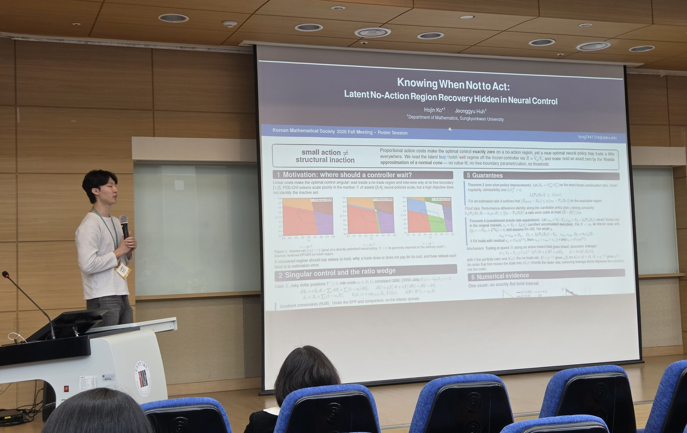

Hojin Ko received an Outstanding Poster Award at the 2026 Korean Mathematical Society (KMS) Fall Meeting, held at Gwangju Institute of Science and Technology (GIST) from October 29 to 31. His award-winning poster was titled “Knowing When Not to Act: Latent No-Action Region Recovery Hidden in Neural Control.”
Hojin also gave a presentation on his award-winning poster. Congratulations to Hojin on this achievement! 👏

Hojin Ko presenting his award-winning poster, Knowing When Not to Act: Latent No-Action Region Recovery Hidden in Neural Control.

Hojin Ko — Knowing When Not to Act: Latent No-Action Region Recovery Hidden in Neural Control. Outstanding Poster Award.
See all MLFE Lab presentations at the KMS Fall Meeting 2026.